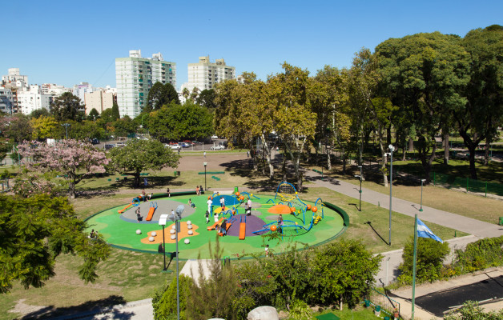
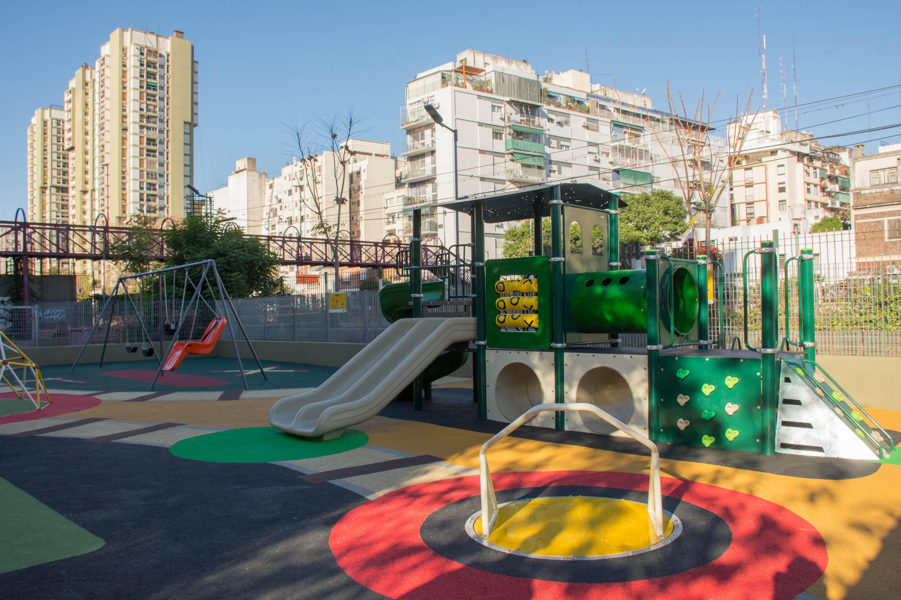

Barrio Caballito
Caballito se encuentra ubicado en el centro geografico de la Ciudad de Buenos Aires, es un barrio super pintoresco, residencial y con una muy buena zona comercial ya que todo se encuentra muy centrico, además cuenta con espacios verdes donde se encuentran diversos lugares para visitar en familia y pasar un lindo momento. Este barrio tiene sus origenes en el año 1821 y debe su nombre a una importante Pulperia que se unicaba en la actual AV. Rivadavia y Emilio Mitre. entre los lugares mas importantes para visitar se encuentran: Tranvia histórico de Caballito, Museo de Ciencias Naturales Bernardino Rivadavia, Asociacion Argentina Amigos de la Astronomia,y sus lindos espacios verdes. .
Parque Rivadavia
Conocido originalmente como Plaza Lezica ubicado en la Avenida Rivadavia 4900 y también tiene entrada por la calle Rosario 385, es un Parque my ámplio ideal para hacer deporte y pasar el dia en familia y con mascotas. en él encuentras librerias, una calesita, pista de patinaje y un hermoso parque infantil que fue remodelado recientemnete en su totalidad y los fines de semana realizan ferias artesanales y numismatica.
Horaio: Está abierto 8:00 - 20:45 hrs.
Qué conocer cerca del Parque: Cerca de este Parque podemos encontrar la heladeria Luccianos, tienda de helados, tienda de café, la parroquia Nuestra Señora de Caacupé, Caballito Shopping Center, Shopping Atlas Caballito, Galeria Rivadavia, Club Italiano y diversos restaurantes.
Cómo llegar al Parque:


Parque Centenario
Ubicado en el centro de la ciudad, entre Av. Diaz Velez, Patricias Argentinas 392 y Leopoldo Marechal; es un Parque muy grande y un excelente espacio para pasar el dia en familia, disfrutando de diversas actividades culturales al aire libre es un espacio privilegiado ya que en el encuentras lugar para realizar cualquier actividad, sea deporte , juegos, picnic, andar en bici, pasear tus mascotas, realizar compartir familiares y con amigos ademas que cuenta con el hermoso atractivo de un lago y cuyos visitantes se sientan a disfrutar de las vistas. También tiene calistenia y canchas de fútbol,skatepart, espacio de juegos para chicos que es muy completo y fue rempdelado recientemente, integrando así a toda la familia y a todas las edades.
Horario: Está abierto desde las 8:00 - 22:00 hrs.
Qué conocer cerca del Parque: los fines de semana se realizan las ferias artesanales y artesanales donde podras encontrar variedad de articulos. Dentro del parque se encuentra el Museo de Ciencias Naturales, a sus cerecania podemos encontar heladerias Grido y Lado bueno así como diversos sitios de venta de empanadas; además es importante mencionar que a las inmedicaiones de este parque se encuentra el hospital de oncología Maria Curie, y el Hospital Naval Dr. Pedro Mallo como tambien un espacio para visitar y aprender comolo es La Fundacion Instituto Leloir
Cómo llegar al Parque:
Plaza Gioradano Bruno
Ubicado entre las vias del ferrocarril Sarmiento y las calles Rojas, Bacacay, parral y Giordano Bruno, recibe su nombre como homenaje al astrónomo y matemático italinao muerto en la hoguera de la Inquisicion. la plaza cuenta con espacios de juegos para niños inaugurado este año 2023con la temantica de identidad del barrio Caballito los ferroviarios y los tranvia creando así nuevos juevos integrados con suelo anti golpe y espacio para padres cuentan además cuenta con una cancha de basket, futbol para todas las edades.
Horario: Está abierto desde las 8:00 - 20:00 hrs.
Qué conocer cerca del Parque: Podras encontrar variedad a sus cercania la estacion del tren Sarmiento parada Caballito, y si estas en el parque y quieres comer o tomar algo encuentras en sus cercanias; Bardolino Caffe y vino, pizzeria Caprichozo, a pocos metros los pequeños pueden seguir disfrutando en la calesita y jugueteria caballito en la calle Rojas.Ademas por estar cerca de la Av. Rivadavia encuentras una muy buenazona comercial.
Cómo llegar al Parque:
